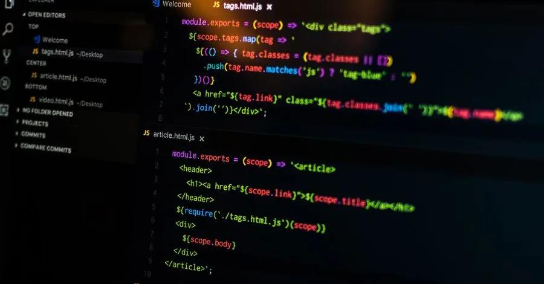

Backend
Programação Backend inclui linguagens como Java, Python, C#,JavaScript, frameworks como Spring, Django, Ruby on Rails, bancos de dados relacionais e NoSQL, API design, autenticação, autorização e testes.
Conhecimentos adicionais necessários são inglês técnico, metodologias ágeis, gerenciamento de projetos, trabalho em equipe e comunicação eficaz.
O Desenvolvedor Backend cria a lógica por trás de sistemas ou aplicações, trabalhando com servidores, bancos de dados e APIs. Ambos requerem conhecimento técnico, habilidades analíticas, compreensão de negócios e comunicação eficaz. Atuam em empresas de tecnologia, instituições financeiras, governamentais e consultorias, além de ambientes de pesquisa e desenvolvimento. São fundamentais para empresas que utilizam tecnologia da informação.
- Processar requisições dos usuários.
- Conectar dados do navegador ao banco de dados.
- Aplicar regras de validação e segurança.
- Manter servidores e aplicações.